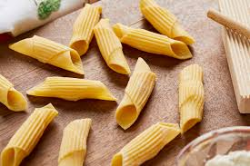

Easy Pasta Recipes



Welcome to Easy Pastas!
Craving something delicious but don’t have hours to spend in the kitchen? You’re in the right place! Our collection of Easy Pasta Recipes will satisfy your cravings without the hassle. Whether you’re a pasta pro or just looking to whip up something quick, these recipes are designed to bring rich flavors and comfort to your table in no time.
From creamy alfredo sauces to spicy tomato-based classics, pasta is versatile, comforting, and always a crowd-pleaser. And the best part? You don’t need a lot of fancy ingredients—just a love for simple, delicious food!
Why We Love Pasta
- Quick to Make: Most pasta dishes take under 30 minutes to prepare, perfect for busy weeknights or lazy weekends.
- Endless Variety: Whether you’re into penne, fettuccine, or spaghetti, pasta pairs with almost any sauce, from creamy to spicy.
- Budget-Friendly: With just a few pantry staples, you can create a gourmet dish at home without breaking the bank.
Top Easy Pasta Recipes
- Spaghetti Aglio e Olio - A simple, yet delicious classic made with garlic, olive oil, and chili flakes. This Italian favorite is ready in under 20 minutes!
- Creamy Alfredo Pasta - Dreamy, creamy, and comforting! This fettuccine alfredo recipe will quickly become a go-to for pasta lovers everywhere.
- Penne Arrabbiata - Like a bit of heat? This penne in a spicy tomato-based sauce is for you. Fresh basil adds a nice touch to this fiery dish.